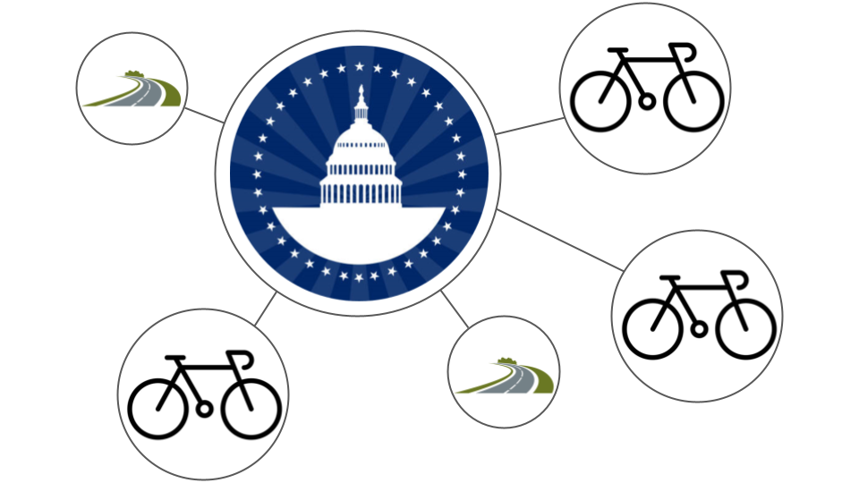

Analyzing Bike Routes in Washington, DC
Clustering and Classification for Urban Insights

Create a Landing Page for Your Project
- Summarize your topic, its significance, related work, and the questions you plan to explore.
- Draft an introduction with at least 5 research questions. These may evolve as your project progresses, since data science is an iterative process.
- Include your data science questions on this page.
Additional Ideas for things to include
- Audience: Who is this for? Data professionals, businesses, researchers, or curious readers.
- Headline: A captivating title introducing the data science theme (e.g., “Unlocking Insights Through Data Stories”).
- Introduction: A brief, engaging overview of what the website offers (e.g., data-driven stories, insights, or case studies).
- Questions You Are Addressing: What do you hope to learn?
- Motivation: Explain why this topic matters, highlighting the importance of data in solving real-world problems.
- Key Topics: List the main focus areas (e.g., machine learning, data visualization, predictive modeling).
- Use Cases/Examples: A brief teaser of compelling stories or case studies you’ve worked on.
- Call to Action: Invite visitors to explore the content, follow along, or contact you for more information.
- Visual/Infographic: Add a simple graphic or visual element to make the page more dynamic.
Summary
Washington DC is a leader in urban cycling infrastructure, with an expansive network of bike lanes and trails supporting eco-friendly commuting. However, DC’s trails are not only for commuting within the city but also numerous options for purely recreational use. In the confides of a large city these options for recreation can be extremly popular, so a deeper understanding of bike route utilization, accessibility, and safety are imperative. This project focuses on scraping, analyzing, and visualizing data about DC’s bike routes to identify patterns and trends through clustering and classification. The insights gained can guide city planners in optimizing infrastructure, improving safety, and promoting cycling as a sustainable mode of transportation.
Significance
Cycling is integral to sustainable urban mobility, offering benefits such as reduced carbon emissions, improved public health, and decreased traffic congestion. By analyzing cycling routes, we can uncover patterns of use, gaps in infrastructure, and safety concerns, enabling data-driven decision-making for a greener and safer DC.
Research Questions
- How can clustering techniques help categorize bike routes based on usage, distance, location, or ratings?
- Which factors are the most important in clustering of bike routes?
- Is it possible to classify bike routes with existing data?
- What insights can be drawn about the existing routes in developing more routes as the city grows?
- What data would make this clustering and classification more robust?
Literature Review
In the past decade, urban cycling infrastructure has garnered attention due to the relevance in addressing environmental sustainability concerns. Cycling offers a low-cost, sustainable mode of transportation that reduces greenhouse gas emissions, mitigates traffic congestion, and promotes physical activity. Understanding the current landscape of research on this topic is crucial for identifying gaps in knowledge and expand on them. This literature review aims to harmonize key findings, methodologies, and trends have shaped the current understanding of this topic area.
“How to Use Selenium to Web-Scrape with Example” provides a step-by-step guide on using Selenium, a Python library, for web scraping tasks, focusing on extracting NBA player salary data from Hoopshype. Selenium automates web browsers, allowing for efficient data collection from websites that may be otherwise difficult to scrape through traditional methods. Selenium’s advantage lies in its ability to interact with dynamic web pages, which may load content via JavaScript. This method is particularly useful for collecting structured data from websites that do not provide APIs or straightforward access to information, such as the site we are interested in gathering our data from. This article is relevant to our study as it demonstrates the basic workflow for setting up and using Selenium for web scraping. The same techniques of web driver installation, XPath usage, and data extraction will be applicable for scraping bike route information from the provided websites. Additionally, the iterative process of scraping multiple pages and aggregating data aligns with the need to collect comprehensive datasets for clustering and classification in this project.1
In the article “Visual Exploration of Cycling Semantics with GPS Trajectory Data”, the authors address the need for a comprehensive system to analyze cycling semantics from both the cyclist’s and the road’s perspectives. By utilizing large-scale GPS trajectory and road network data, the authors propose VizCycSemantics, a visual analytic system that aims to uncover hidden patterns in cycling behaviors and moving characteristics along road segments. While this paper gets bogged down with technical jargon about GPS data and challenges, they present some very interesting points on clustering. The VizCycSemantics system uses Latent Dirichlet Allocation (LDA) to extract cycling topics—representing cyclist behaviors—and k-means++ clustering to identify groups of similar cyclists and road segments. This research is particularly relevant to our project, as it provides a proven framework for analyzing cycling data through clustering and topic modeling. While our base approach will differ significantly, our goal of uncovering patterns in cycling routes and behaviors aligns well with their study.2
Chapter 9 of “Capital Dilemma” addresses bicycling trends and policies in the DC area since 1990. The study of cycling trends in the Washington, DC metropolitan area provides essential insights into the growing role of cycling in urban mobility and infrastructure planning. The expansion of bike lanes, along with innovative programs and policies, has significantly increased cycling levels in the region, particularly within the urban core of Washington, DC, Arlington, and Alexandria. As highlighted, cycling levels have risen in tandem with the development of bike-friendly infrastructure, such as on-street bike lanes and off-street shared-use paths, though challenges remain in terms of accessibility and inclusivity. This literature is highly relevant to our project, where we aim to analyze and classify bike routes in Washington, DC. Understanding the spatial distribution of bike lanes and their relationship with cyclist behavior in various neighborhoods offers a valuable framework for our clustering and classification efforts.3
The article “Machine Learning Approaches to Bike-Sharing Systems: A Systematic Literature Review” details numerous applications of machine learning techniques within the sphere of bike-sharing systems (BSS). It stresses the importance of these systems in the modern era, highlighting their role in reducing carbon emissions, improving transportation accessibility, and influencing the overall transportation culture of a city. The paper reviews 35 studies from 2015 to 2019, aiming to evaluate the performance of various machine learning techniques applied to BSS while also identifying challenges and proposing future research directions. The methodology used to evaluate the machine learning methods is the Preferred Reporting Items for Systematic Reviews and Meta-Analyses (PRISMA) Framework. Key findings from the paper include the high accuracy with which random forests and gradient boosting machines predicted bike availability and demand trends. Other techniques, such as decision trees and deep learning, were useful for understanding trip patterns and user segmentation. Deep learning, in particular, is becoming more prevalent, as neural networks are capable of efficiently handling complex datasets. Finally, clustering techniques were applied to analyze station usage patterns and trends. The paper concludes that, through a combination of machine learning, transportation engineering, and planning, future efforts should focus on developing machine learning models that are easily interpretable and transferable to various cities. Another goal is to leverage real-time data to optimize BSS instantaneously.4
The article “Learning to Cluster Urban Areas: Two Competitive Approaches and an Empirical Validation” compares two clustering methodologies to effectively group urban areas with similar characteristics. The two approaches introduced are Deep Modularity Networks (DMON) and a traditional graph-based clustering method. DMON is a neural network approach designed to optimize cluster modularity. Specifically, it graphically represents urban areas and connects them to other areas that share similar spatial or economic traits. The network maximizes modularity while adapting to different situations for greater flexibility. The traditional graph method, on the other hand, relies on classical algorithms like spectral clustering. Although these algorithms also maximize modularity, they underperform in terms of adaptability, scalability, and other areas. Through empirical validation, the authors demonstrate that DMON outperforms the traditional graph method in terms of performance, processing efficiency, and utility. One application of DMON discussed in the paper is its use for transportation planning. This clustering method helps identify critical transportation nodes and corridors, facilitating more efficient transit design. However, DMON has some limitations, particularly in terms of interpretability. Deep learning often produces outputs that are difficult for non-experts to understand, which could hinder the urban planning process and lead to stagnation. Despite this, the paper demonstrates the effectiveness of clustering methods in addressing urban environmental issues.5
Unlike the previous two papers, this research, “A Taxonomy of Machine Learning Clustering Algorithms, Challenges, and Future Realms”, offers a more comprehensive examination of clustering algorithms. The paper categorizes various clustering algorithms based on their methodologies and use cases, providing insight into which algorithms are best suited for specific situations. More specifically, the paper focuses on five different types of clustering algorithms: partitioning-based clustering, hierarchical clustering, density-based clustering, model-based clustering, and graph-based clustering. Partitioning-based clustering is best used in applications such as customer segmentation and urban planning. Hierarchical clustering is more appropriate for social network analysis or gene expression studies. Density-based clustering is suitable for spatial analysis and transportation planning. Model-based clustering is commonly applied to problems involving images and text. Finally, graph-based clustering excels in social network detection and geospatial analysis. Regardless of the problem, all clustering methods have their inherent limitations and should be used carefully. Future directions for clustering algorithms include combining two or more algorithms to leverage their strengths, as well as exploring automatic hyperparameter tuning to ensure optimal performance for specific problems. Clustering is an invaluable tool for solving real-world problems, but it is essential to choose the right algorithm based on the specific context.6
About Us
Gentry Lamb
Gentry Lamb is a Graduate Student at Georgetown University pursuing a Masters in Data Science and Analytics. He received a Bachelors in Operations Research in 2024 at the United States Air Force Academy in Colorado Springs, CO. He was also commissioned into the U.S. Air Force as a 2nd Lt and will be attending Pilot Training at Vance AFB in Oklahoma after graduating from Georgetown. After his time in the Air Force he is looking forward to working as a data scientist or operations analyst.
Education:
- 2024: United States Air Force Academy (USAFA) - B.S. Operations Research
- 2025: Georgetown University - M.S. Data Science and Analytics (Current)
Chase Clemence
Chase Clemence is currently a graduate student at Georgetown University pursuing a Masters of Science in Data Science & Analytics. Prior to this, he received a Bachelors of Science in Operations Research from the United States Air Force Academy in 2024, commissioning as a 2nd Lieutenant. After obtaining his degree, he will head to Goodfellow AFB in San Angelo, Texas to start training as a Military Intelligence Officer in the United States Air Force. Following his Air Force career, he has aspirations of getting an MBA and working in industry. He hopes having a background in data science and business will make him an effective leader in the civilian sector.
Education:
- 2024: United States Air Force Academy (USAFA) - B.S. Operations Research
- 2025: Georgetown University - M.S. Data Science and Analytics (Current)